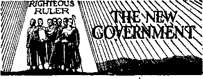
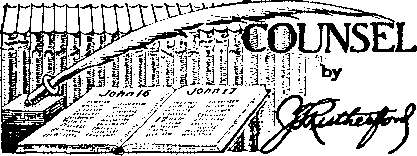

Would Surely Bring the Inquisition
Sniffing the Empire in the Wind
The New Government
Conspiracy Against Democracy Booklet
Counsel by J. F. Rutherford
“Asleep on the Lip of Vesuvius”
Conspiracy Against the Liberties of
British Comment
Summertime;— Harvest Prospects -— Food Control —A Bishop Tells His Flock — Religionists Mingle but Cannot Pray-— Roman Catholics and Trades Unions —
Announcing the Kingdom 29-31
Published every other Wednesday by
WATCHTOWER BIBLE AND TRACT SOCIETY, INC.
117 Adams St., Brooklyn, N. Y., IT. S. A.
Editor Clayton J. Woodworth
Business Manager Nathan H, Knorr
Five Cents a Copy
JI a year In the United States (1.25 to Canada and all other countries
, NOTICE TO SUBSCRIBERS
Remittances: For your own safety, remit by postal or express money order. When coin or currency Is lost In the ordinary mails, there Is no redress. Remittances from countries other than those named below may be made to the Brooklyn office, but only by International postal money order.
Receipt of a new or renewal subscription will be acknowledged only when requested. Notice of Expiration Is sent with the journal one month before subscription expiree. Please renew promptly to avoid loss of copies. Send change of address direct to us rather than to the post office. Your request should reach us at least two weeks before the date of issue with which it is to take effect. Send your old as well as the new address. Copies will not be forwarded by the post office to your new address unless extra postage la provided by you.
Published also in Afrikaans, Bohemian, Danish, Dutch, Finnish, French, German, Greek, Hungarian, Japanese, Norwegian, Polish, Portuguese, Spanish, Swedish, Ukrainian; also special Australian edition in English.
OFFICES FOR OTHER COUNTRIES
England 34 Craven Terrace, London, W. 2
Canada 40 Irwin Avenue, Toronto 5, Ontario Australia 1 Beresford Road, Strathfleld, N.S.W. South Africa 623 Boston House, Cape Town
Entered as second-class matter at Brooklyn, N, Y., under the Act of March 3, 1879.
Notan tl a
The “New Order” in America
♦ There is one desire that consumes the waking hours of most men today: How to escape disaster? The Bible answers that question and makes it certain that salvation shall not come by the hand of men, nor by governments of men. “Salvation belongeth unto the Lord” (Psalm 3:8); likewise mercy and vengeance belong to Him,—Psalms 62:12; 94': 1.
Now stands up a champion who says he will bring a “revival of religion” to protect the “American way of life”. Will these remedies, applied with all the vigor possible by the strongest executive that has ever been permitted in this nation, alleviate the fear and bring back prosperity to a groping people? Let the Bible answer. “The wicked shall be turned into hell, and all the nations that forget God.”—Psalm 9:17.
Has America forgotten God? The Lord’s name is sometimes heard mentioned—but read Isaiah 29:13.
Christ Jesus taught His followers to pray for the kingdom of heaven, otherwise called The Theocracy. “Thy kingdom come. Thy will be done in earth, as it is in heaven.” (Matthew 6:10) Have not all leaders forgotten that this kingdom was to bring about man’s salvation, and not any “deal” or “order”?
Many contemporary expressions show the drift or trend of this country. Only a few see the disaster ahead. The opinions of men, such as have been compiled, indicate no acknowledgment that God’s kingdom is here. Attention is called to the fact evidenced in the following pages that America has forgotten God and is going over entirely to His enemy To-talitarianisjn, which claims to rule in place and stead of His kingdom. This is pointed out, not to ridicule anyone, but to safeguard the interests of those who wish to seek safety under The Theocracy, which shall rule the world in righteousness.
“And in His name shall the nations hope.”—Matthew 12:21, A.R.V.
Volume XXII Brooklyn, N. ¥., Wednesday, August SO, 1941 Number 572
The “New Order” in America
(Zn Two Paris—Part 1)
BY WAY of contrast with totalitarianism, Americans may worship as they please, speak as they please, write and print as they please. They may hold public meetings at which the government is criticized. The government cannot search their houses without warrant, cannot take property without paying for it, cannot quarter soldiers upon them in time of peace, cannot try them for crime except upon due process, must grant them jury trial, cannot hold them in excessive bail or inflict cruel or unusual punishments. These ideals and practices are totally foreign to the entire totalitarian outfit of Hitler, Stalin, Pacelli, Mussolini, Franco, Salazar, and all the rest of the criminals in high positions in Europe and Asia. And they are now threatened.
No one looking for evidences that the “new order” of the pope and Hitler is progressing in the United States should have difficulty in finding them. At the very outset of the present regime under Franklin Delano Roosevelt he made the statement, significant in retrospect, that “the rebuilding of America cannot be done in a day or a year”. His methods of accomplishing this rebuilding have been attributed to Papal encyclicals, as witness the following: '
John A. Matthews, New Jersey lawyer, urged Fordham graduates to look for their inspiration to the popes Leo XIII and Pius XI, and then said^/‘The man at the helm of our government today is wedded to this very course. The remarkable parallel between the principles regarding social reconstruction enunciated AUGUST 20, 1941 , ' by the popes and the efforts at national recovery launched under the Christian leadership of President Roosevelt is an earnest that social justice as preached by the sovereign pontiffs can be the ultimate economic salvation of America if Catholic Action will express itself in united prayerful co-operation with honest elected leadership and not in the hopeless program, however sincere, of emotional mobocracy.”1
The Popes vs. Jefferson
In an address at Boston, Governor James M. Curley, addressing an organization of fellow' Catholics, said:
“The Roosevelt program is fashioned along the lines of the encyclicals of Pope Leo XIII and Pope Pius XI. If anyone had said a century ago that we should so revolutionize our government that we should accept the guidance of ‘our holy father’, Pope Leo XIII, rather than Thomas Jefferson, we should have de'emed him a fit subject for a psychiatrist.”
Senator Huey Long said:
Our president of the United States, the knight of the Nourmahal, says we are confused because we cannot see just how this thing is going to look when he gets through making it. Why, to be sure! All those millions of hogs they killed; all those cattle they shot down; the milk they poured into the rivers, with the people starving for it; all of the cotton they plowed under, and wool that they burned up, with the people naked because they could not get’it; none of us can see just how that is working out.
This, however, was not tire worst aspect of the “new order” in America. It soon became apparent that progressively the fundamental liberties and rights of Americans under the Constitution were being threatened. Many voices called attention to this trend.
Dr. Nicholas Murray Butler, president of Columbia University, said in an address at Hotel Biltmore in New York:
The fundamental principles to which we are devoted, the fundamental institutions which we and our English ancestors have been engaged in building for the last 1,000 years, have not only ceased to have influence in strange lands but are being challenged in our own country.
What has become of the old, constructive, forward-looking, historical liberalism ? Where are the voices, where the statesmen, where the prophets, the Chathams, the Burkes, the Pitts, the Hamiltons, the Jeffersons, the Madisons, to stand before the whole world and proclaim, defend and interpret those principles written into the Bill of Rights and the Constitution of the United States and accepted by the English people without being written into any specific document? Fifty years ago it seemed as if liberty was on the march in most Western countries. Now the resistance to liberty has become so definite, so specific and so terrifying that everything in which we believe, the fundamentals on which our institutions are based, are at stake in this war of ideologies.
Little by little you- find this transfer going on, even in liberty-loving countries like France, England and the United States, without any realization that a conflict is in progress between two1 conflicting principles.
The doctrine of the superiority of the State —now armed with power- as never before— is fully conscious of what it is trying to do. Its intention is to wage war on the doctrine of civil, religious, political and economic liberty until the world has been reduced to a state of controlled compulsion. That is the fundamental challenge facing America, Great Britain and the world at the dawn of a new decade.
Letting Fascism down gently, and America not so gently, the “Reverend Father” Fulton J. Sheen, of Catholic University, Washington, in an address to the Judiciary of Brooklyn, said that Americans should beware of “a mental condition by which we judge other peoples by their methods of government”, and, “Human rights existed long before the American democracy, and we have no right to impose our form of government on others.” He did not mention any country America is trying to coerce into accepting its form of government, and he avoided mentioning any government, including his own, that thinks it all right to murder people who disagree with it. To what extent were human rights recognized in the Middle Ages?
President Roosevelt must be credited with giving at least lip service to freedom. And he may mean this according to his lights. Yet he is setting in motion powers which in the opinion of the most forwarding-looking and sincere .proponents of humanity and liberty will lead to dictatorship.
William Philip Simms, in an article in the New York World-Telegram of March 20, said:
The “Four Freedoms” which President Roosevelt would make the basis of his new world order are:
Freedom of speech and expression.
Freedom of every person to worship God in his own way.
Freedom from want.
Freedom from fear.
The scheme to rebuild the world, as past events have proved again and again, is gn intoxicating draught to those who assume they must play an important part in its attainment. God has not asked or commissioned men to build a world or create a new earth. That He will do Himself. It is for men to follow the right. President Roosevelt has ignored the rights of Jehovah’s witnesses, although they appealed to him as Paul appealed to Caesar. It is his treatment of minorities that serves as an infallible indicator of his true caliber. The American Legion, the very agency most active in the persecution of the witnesses, was recommended by the president for national service which its course had shown it to be absolutely unfit for. His act here belied his words.
The president’s appeal to the American people, according to German commentators, copied the style used by Hitler and Mussolini when they started on their way to power. He called upon the ' ^.people to be satisfied with longer working hours, smaller profits, higher taxes and other sacrifices.
Wm. H. Anderson, in The Monitor of March 22> says:
We have never had a president who resented even legitimate criticism as he has done. To top that, we have never had a president who had so crass and undisciplined a spirit of vindictiveness, leading to open unscrupulous and unprincipled perversion of power for personal ends to discredit those guilty of criticism that got under his skin.
The delegates of the American Bar Association, assembled at Chicago, March 17, urged that the task before Americans is to save the Republic and the limiting of Federal administrative agencies. A committee report quoted the words of Daniel Webster, “The contest for ages has been to rescue liberty from the grasp of executive power.” The report said in part:
We are once again the only oasis in the desert of totalitarianism, and there are those among us—some willfully and others ignorantly—who are attempting to poison our wells of liberty. ...
The task is ours to preserve the Republic, as was recognized by Franklin, while the task of the men who labored at Philadelphia in the summer of 1787 was to frame a system of government whereby that Republic could be preserved.
The people of 1776 and 1787 had experienced totalitarianism. They knew its tyranny, its stupidity, its burdens on both body and soul, and, 'Oliver Wiswells’ to the contrary AUGUST 20, 1041 notwithstanding, it was no mere declaration when Patrick Henry, for instance, declared .that he knew not what course others may pursue, but as for him, give him liberty or give him death!
We would further add that it is asserted by most students of government that a good'totalitarian government is more efficient than a republican form of government. But this was known to the men of 1776 and 1787 and they aimed at creating -a safe government under which liberty for the individual could live!
The Bar Association spoke well. When totalitarian governments claim greater efficiency it is pertinent to ask, Efficiency - ■ for what? The plain answer is, Efficiency. for oppression. ' .
In this connection the remarks of Setn- . ator Burton K. Wheeler in the first session of the 77th Congress are significant. He said: ■
Nowhere does there exist such fine soil for Fascism as a land economically exhausted and unbalanced by a costly war—and disillusioned by the inevitable tragic post-war awakening. That is the soil in which Fascism flourishes. That is the soil which produced Soviet Russia, Fascist Italy, and Nazi Germany. That is the soil which will produce a Hitlerized America,—even though Hitler will be dead and buried.
And a nation at war is almost by definition a regimented nation. It operates on the dictatorship principle. The individual is subordinated to one objective—the waging of war. In consequence, civil liberties are curtailed, censorship imposed, industry taken over, labor’s right to strike abridged or abolished, and all opposition ruthlessly crushed. Already in the United States we are witnessing the abridgments of precious liberties and constitutional guaranties. What will war and a postwar period do to them? The answer is obvious.
Those of us anxious to preserve civil liberties and peace have been subjected to a smear campaign. Never once has fact been answered with fact, or reason with reason. Instead, cries of “pro-Nazi, Hitler agent, anti-Semite” are shouted at the opposition. This is bigotry in its vilest form. This is a return to the monar-chial concept that the king can do no wrong.
I have said—and I repeat—that there are men in the world who are far more concerned with the restoration or the preservation of their economic and social status than with the welfare of the masses of the people. . . .
I am not interested in the race or creed of these men. I am concerned—and always have been—with the welfare of the great mass of humanity, with the underprivileged, with the economic and social status of those who are ill-fed, ill-clothed, and ill-housed. I abhor and oppose those in this country, or in any country in the world, who make a fetish of the persecution of any minority group. I denounce those who play upon the passions and emotions of our people with this kind of medieval mendaciousness.
It is easy to be s^en that Senator Wheeler could not possibly merit the favor of the Hierarchy-Hitler combine.
A study of 35 dictators by J. 0. Hertz-ler shows that each 'has come forward after a period of confusion, and each is a genius combining “diabolical cleverness, arrogance, love for intrigue, unscrupulousness, a bent toward strategy, a fanatical idealism, a hard-shell realism, and the ability to quickly use every advantage”.
Franklin D. Roosevelt, Jr,, in an address at Ohio State University, stated that his father could have been a dictator in 1933, and ever since (I), but does not wish ever to be one, and that in his opinion his father is the greatest lover of true democracy since Jefferson and Lincoln.
President Roosevelt objected to the occasional government by one man when the Supreme Court by a 5 to 4 decision killed some bill of Congress, At that time he held in high esteem those seven presidents of the United States who never once used the veto. But since then Mr. Roosevelt has vetoed not less than 473 bills, which is almost but not quite ten times as many vetoes (49) as were exercised by all the presidents of the United States in the first 84 years of its history.
And does he love one-man rule now! In 3J years ending October 7,1939, his boys in 115 executive agencies handed down 15,000 rules and administrative decisions telling the people what they could or could not do.
In the more than 150 years of history of the United States Government there have been but nine Catholics in the presidential cabinet. Four of these were appointed by the present president.
What with Roosevelt sending a personal ambassador to the pope and Archbishop Spellman sending Willkie to come to him for a six-hour lecture on what a president of the United States is supposed to say and do, ^pd the national chairman of the Republican party of the same faith as Farley and his successor, it appears that the Hierarchy is far more important in America than it should be.
President Roosevelt states that his sending of a personal representative to the Vatican does not constitute the inauguration of formal diplomatic relations with the Vatican, and then a newspaper at Rome says that the Vatican has decided that Taylor is just as much an ambassador to the “holy see” as the representatives of other nations, and could remain so accredited even after Mr. Roosevelt ceases to be president. Somebody is lying, and the president himself is authority for his recent statement, “The value of truth and sincerity is always stronger than the value of lies and cynicism.” Why would a truthful and truth-loving president send a personal ambassador to represent him at the center of the greatest lie-factory ever inaugurated upon the footstool? Every newspaperman knows that not one thing put forth from Vatican City can be accepted as the absolute truth. It is a settled principle of the Vatican to make lies its refuge in everything.
President Roosevelt declares that what he said four years ago, namely, “No greater thing could come to our land today than a revival of the spirit of religion,” is still his opinion. It seems too bad that the president does not know any more about the spirit of religion now than he did four years ago; for it, is the spirit of intolerance, of persecution, of hypocrisy and of falsehood. Moreover, a revival of the spirit of religion, as it existed when it had universal power in Europe, would necessarily mean a revival of the Inquisition in all its horror.
''Referring to the organization that financed Hitler, Franco and Mussolini in their campaigns to spread totalitarianism over the earth, and to the statue or monument they have erected at El Paso, Texas, the president says that what the people of America need is a “revival of religion” and “faith in the everlasting reality of religion”. The poor man did what he could to get them into that when he sent Taylor to the Vatican, but it did not seem to work.
Senator Burton K. Wheeler, of Montana, in an interview for PM, said, in part:
The thing that has bothered me all through ... about'Roosevelt is that he’s said we’ve continually got to give him power. It’s always a grab for power, power, power. What concerned me was not only that he should not take total power, but that he should not want it. And now certainly, if ever, we should avoid the granting of total power.
He wanted to cut the gold content of the dollar, and he got the power to do that. I voted for it, but with a good deal of reluctance. We gave him a stabilization fund of two billions. Then we gave him the tremendous power of public works. He could use this with a lot of his friends to get them to go along with him. You grant me the power to give public works to one man and to deny them to another just across the line and I’ll show you how to control Congress. Then he wanted the ■ Supreme Court to be properly subservient to him. I said to him: "You can get three resignations from the court, if you want them.” But that wasn’t enough for him. I like the president, but I argued with him about this and many other issues. ’
In the ’36 campaign I traveled with Roosevelt on his special train from Washington, D.C., to Colorado Springs and back to Chicago and went over every speech he made. Then I swung back through seven states and wired him that he’d carry every state west of the Mississippi.
The Tulsa Tribune, under date of January 12, refers to the president as a selfperpetuating emergency, saying editorially:
By instinct, and by eight years of performance, Mr. Roosevelt never yields a power that is once, under the plea of “emergency”, put in his hands. He has made himself the perpetuating emergency. Our satellite congressmen, betraying their trust, have let him do this. Through the eight years Congress has yielded to his demands for expanded power he has constantly demanded more and more and returned none. . . . Let the oil industry, the steel industry, the lumber industry and all the major industries that convert bulk production into refined products pass into the administrative hands of Franklin Roosevelt, who never in his years of civil life built an industry or maintained a pay roll, and you will have an ultimate collapse of our civilization that will lose not only our liberties, but the products of liberty to which the whole world reaches with the empty hands of despair, Labor’s rights will be lost. Let labor look abroad if for a moment it doubts that.
The dictatorship bill H.R. No. 1776 makes President Roosevelt a dictator with full power to send American warships and merchant vessels into war zones, to give unlimited funds to ahy foreign power, to cancel any law on the statute books, to make military alliance with any nation anywhere in the world, to take America into war whenever, wherever and against whomever he chooses, to give away the American navy to any nation, to give away every gun and every bullet in the army to any nation, to give away every American airplane to any nation, to give away all America’s military secrets to any nation,
to open American harbors and all their facilities to the warships of any nations engaged in war, and to seize the ships of one country and give them to another.
The American Congress has given away the American nation to one man, and the people love to have it so. Having had democracy, they now wish to be like other nations, say like Czechoslovakia, Poland, Denmark, Norway, Netherlands, Belgium, Luxemburg, France, Austria, Hungary, Rumania, Bulgaria, Yugoslavia and Greece. Those countries are all ruled by one man. It is all the style. It goes with the New Deal. One year Congress gave the president $3,000,-000,000 to do with as he saw fit, and another year gave him $4,880,000,000. Now they have finished the job and given him everything.
The president made a clever simile when he suggested to the newspapermen that if his neighbor’s house catches fire, and he happens to have 400 to 500 feet of garden hose with which the fire could be put out, he does not ask his neighbor to pay $15 for the hose. Instead, he hooks the hose to the hydrant and his neighbor agrees to replace a damaged section. That is why ships, planes and munitions are being loaned to .Britain. It is an emergency.
From the president’s radio address of December 30 the following is quoted:
The Nazi masters of Germany have made it clear that they intend not only to dominate all life and thought in their own country, but also to enslave the whole of Europe, and then to .use the resources of Europe to dominate the rest of the world. . . .
Some nations of Europe were bound by solemn non-intervention pacts with Germany. Other nations were assured by Germany that they need never fear invasion. Non-intervention pact or not, the fact remains that they were attacked, overrun, thrown into the modern form of slavery at an hour’s' notice or even without any notice at all. . . .
The Nazis have proclaimed, time and again, that all other races are their inferiors and therefore subject to their orders.
In a military sense Great Britain and the British Empire are today the spearhead of resistance to world conquest. And they are putting up a fight which will live forever in the story of human gallantry. . . .
We must be the great arsenal of democracy. For us this is an emergency as serious as war itself. We must apply ourselves to our task with the same resolution, the same sense of urgency, the same spirit of patriotism and sacrifice as we would show were we at war. • We have furnished the British great material support and we will furnish far more in the future.
Says H. L. Mencken, in the Baltimore Sun (and his remarks constitute an interesting commentary f»n the “fireside chat” foregoing) :
Uncle Shylock is beginning Round 2 of the salvation of democracy a great deal less well-heeled than he was when the gong rang for Round 1. On August 2, 1914, he owed but $1,188,235,400, and had a current income large enough to pay it off, if he had so desired, in a few years. Even on April 6, 1917, he owed less than $2,000,000,000, and it was not until June 30 of that year that his debt approached $3,000,000,000. But now he owes more than $50,000,000,000, and his annual expenditures (not counting the new war expenditures) ■ have gone up from less than one billion to nearly ten billion. Moreover, his partner in Christian endeavor, the Hon. John Bull, is even farther from solvency. When the last war started, the public debt of the United Kingdom amounted to but $3,500,000,000, but at the end of the war it was more than ten times as much, and when the present unpleasantness began it was $40,000,000,000. Inasmuch as the population of the United Kingdom is not much more than a third that of the United States, this equals an American debt of at least $110,000,000,000, or approximately double the burden run up on us by the New Deal. Moreover, it does not include the new debt created by the present war, which is costing, according to Sir Frederick Phillips, K.C.M.G., Under Secretary of the British Treasury, the sum of $45,000,000 a day, or say $16,500,000,000 a year.
There is more than one way of becoming involved in war. The Milwaukee Journal says accordingly:
The Constitution says that Congress shall have the power to declare war. President Roosevelt commits the country to a course which means that Congress will have no choice but war if the enemies of France and Britain engage in reprisals on the United States for our official aid to their foes.
We do not need the words of Virginio Gayda, Mussolini’s unofficial spokesman, to tell us that turning over planes from our navy to their enemies will be accepted by Germany, and any allies she may draw to her side, as war. We know how we should regard it if the case were reversed. The technicality that these planes are *'trade-ins” to the Curtiss Co. on new planes not even begun means nothing.
If there is a reason for our taking part in ■ this war, it is that our way of life is threatened. That is as simple a way as we know of saying it is a war for democracy.
Our way of life, our system of democracy, includes a legislature, an executive, a system of cpurts. President Roosevelt gives the legist lafure—that is, Congress—the run-around, and the case will not come before the courts.
It is not the American way to enter a war by the back door. It is not American to begin a war for democracy by giving up democracy.
Dr. James Bryant Conant, president of Harvard University, in an address given in New York city, in June, 1940, indicates that everybody is scared—no exceptions. He said:-
Many of you are thinking of that threat to freedom which now hangs over us more overwhelmingly today than at any time before— the possibility of complete totalitarian triumph. We all realize the blackness of the shadow east by the successes of the German arms and the joining with these arms of the powerful support of Italian Fascism. We as people have awakened to the imminence of the threat. There may still be dispute as to the course of immediate action, but there is hardly a citizen who does not realize that human liberty on this continent is now in danger.
Frank H. Gannett, publisher of Rochester, N. Y., notes the trend toward dictatorship and says:
Because of distressing economic conditions Washington has been trying to take over control of our lives, our business, our farms and factories. Great bureaus have been built up. Step by step we have departed from the teachings of Jefferson and the fathers of this Republic and have been marching steadily toward control by the State—one-man totalitarian government—and, ultimately, dictatorship.
When the Spanish Republic was dying the traitorous general that marched against Madrid made the statement that he had four columns with him, but there was a fifth column within the city that would at the right time betray it into his hands. Experience shows that in all the republics recently overthrown, Austria, Czechoslovakia and France, this same element has been active. Archbishop MeNieholas, in an address in Cincinnati, said, “No true Catholic in this nation belongs to a fifth column.” “True” to whom? “True” to what ?
The big objective of the Roman Catholic Church is to see all republics come to an end, so that the world may be governed by dictators of its own choice. This truth is leaking out more and more; so it was quite in order for Cardinal O’Connell to say, in Boston, “There will be no fifth column among the Catholics of America.” But there were fifth columnists in Spain, where the expression originated. And there were fifth columnists in Slovakia, and in the Netherlands, and in Belgium and Flanders, and they were zealous Catholics. So, why is America to be so different?
In a study of Fascist activities in the United States, issued by the American Council on Public Affairs, the noted Italian liberal, Professor Gaetano Salvemini, made the statement that “Italian-speaking Catholic priests, with rare exceptions, are carriers of Fascist propaganda in the United States”, This, no doubt, is truth.
Sniffing the Empire in the Wind
Sniffing the revival of the “Holy Roman Empire” in the wind the “Right Reverend” Fulton J, Sheen, in an address in Cincinnati, stated that after the World War No, 2 there will probably come a time when rationality, peace and God will take their place. By “peace” Mn Sheen means that liberty to expose the Hierarchy as the world’s greatest disturber will be at an end, and by the word “God” he means the Roman Catholic Hierarchy, of which the pope, the alleged “Vicar of Christ”, is the center.
In an address at the Manhattan College of the Sacred Heart, New York, the same “Right Reverend” Fulton J. Sheen urged his hearers to “serve as fifth columnists in sweetly betraying others back into the hands of God”, i.e., back into the power of the Roman Catholic Hierarchy and the pope, the “vicar of Christ", who is at the Hierarchy’s center. It was a most appropriate figure of speech, and. just what is now taking place all over the world on a most tremendous scale.
The real “fifth column" was again' marked when E, Haldeman-Julius, in The American Freeman, of August, 1940, said:
The tragic thing about the present situation is that our standard newspapers and magazines daren’t warn the American people against the propaganda of the Jesuits. They’re afraid to tell the people the truth—that there’s a Fifth Column openly conspiring against our freedom and liberalism—the age-old enemy of civilization—the stinking, blood-soaked Roman Catholic Church. Talk about your Nazi Fifth Columnists! They’re chicken-feed alongside the slick, pompous, sacred members of the Hierarchy who are striving io crush our liberal, progressive understanding of democracy and bring in its stead a social order in which the masses will be as enslaved politically and economically as are the minds of the ignorant communicants in the Church. But such Fifth Columnists mustn’t be offended. So our editors shut their eyes (and columns) to the greatest menace facing the American people —the anti-social propaganda of the vicious Catholic Church. And those editors who dare tell the truth about the awful menace to our liberties are made to suffer the penalties of boycott and ostracism because they dare tell the terrible, appalling truth as they see it.
Cardinal Dougherty, instead of acknowledging that Pacelli-Hitler-Musso-lini-Franco aggressions have brought about the European war, professes to think that the war-ravaged countries are being chastised because they turned their backs on God. By this reasoning God could be accused of everything the Devil and his imps have ever done. The only god that can be blamed for Hitler’s conduct, or the conduct of Cardinal Dougherty himself in his conspiracy against Judge Rutherford, is “the god of this world”—the Devil. .
The Manchester Union quotes a Jesuit priest as asking the question as to how it would be possible for the Catholics with only 22,000,000 voters in the United States to dominate the scene when there are 42,000,000 to 44,000,000 other voters in the country. The subtle impression created by that question is that every Catholic person in the United States down to the latest new born babe is a voter. The facts are that the Catholic population is 15 percent of “the population. The other 85 percent are not Catholics. There are almost six times as many non-Catholics in the United States as there are Catholics. If there are 22,000,000 Catholic voters^ then there are about 120,000,000 non-Catholic voters. The sum total is the total population of the country, babes and all. It was a typically Jesuit question,! the plain intent of which was to deceive the hearers into thinking that the Catholic element is at least three times as powerful as it really is. Stripped of its bluffs, boycotts, mobs and illegal practices, the Roman Catholic Hierarchy is one great hollow sham, not really be-consolation
lieved in by the Hierarchy itself or anybody* else.
“Right Reverend” Monsignor Hugh L. McManamin, the gangster that took over the city of Denver on or about June 23-25, 1939, and did all possible to prevent the great name of Jehovah God from being honored there at that time, tells all about the jam America is in. Not naming himself as one of the potent causes, he explains :
This crisis is a complete moral and spiritual breakdown in the nation. America leads the world in all crimes, including murder, robbery, arson and sex offenses.
In an address at Charlottesville, Virginia, the “Reverend” Dr. Joseph B. Code, of the Catholic University of America, at Washington, stated in effect that from now on the priests will do all the thinking and the common people will have no use for their brains. The way he put it was thus: “The cause of European and world-wide chaos is the moral bankruptcy which is the culmination of the enthronement of private judgment, even toward things moral, which began forftr centuries ago."
If such is the case, will the irreverend gentleman who is trying to damn all real Protestantism explain why the great majority of criminals come from Catholic homes? Trends in crime, too, indicate that the Rome-inspired “new order” leaves much to be desired. The Uniform Crime Reports, published by the United States Department of Justice, show that in the last ten years there has been a marked decrease in the crimes of murder, manslaughter, robbery, aggravated assault, and auto theft, while there has been a correspondingly great increase in rape and larceny. Burglary, or breaking and entering, continues about the same from year to year.
Hinsley to the Rescue
All the German bishops, to the last man, announced that they are lined up solidly for Hitler. All the Italian bishops, to the last man, announced that they are
AUGUST 20, 1941 lined up solidly for Mussolini. The pope is the last man behind both the German and Italian bishops, but he has to' have some one windjammer in Britain to take a religious stand for Britain, and so he has Cardinal Hinsley; not all the bishops in Britain, but just this one.
Hinsley, in a British broadcast, said to the English Catholics, “You are on the side of the angels.” This was just before the German cardinals and bishops told -Hitler they wanted him to win, and just before the Italian cardinals and bishops told Mussolini they wanted him to capture the Holy Land. The idea seems to be that in heaven all the angels run around with crosses and beads, German angels in one place, Italian angels in another, and British angels in another.
To try to put the Roman Hierarchy in as favorable a light as possible, at a time when the British are beginning to get their eyes opened to the deal between Pacelli and the dictators, Cardinal Hinsley first had 50,000 bakelite crosses sent out to British soldiers as a “pledge to victory” somewhat like the pledge of Cardinal Verdier in Paris that if Mary would let the French win he would build some new7 churches in her honor at the expense of the French peasants. Mr. Hinsley says that the English Catholics w’ho are fighting German Catholics and Italian Catholics are “fighting in what has become a Christian crusade”. The idea seems to be that almost all these people claim to be Christians and thus their fight is a Christian fight.
There are only 3,000,000 Catholics in Britain, but Cardinal Hinsley finally ordered 2,500,000 of his bakelite crosses, so that every Protestant soldier might have one, as well as every Catholic, of wdiom there are not more than 250,000 in the army. He figures that every time a bomb misses a man wearing one of his crosses the man is bound to think the cross had something to do with it. Superstition is always rife in wartime. He thinks the crosses might help the church.
(To be continued')
Martyrdom of Maximilian
♦ About the fourth century, many Christians, upon mature consideration, thought it unlawful to bear arms under a heathen emperor. Their reasons were:
1st. They thereby were frequently under the necessity of profaning the Christian sabbath. 2d. That they were obliged, with the rest of the army, frequently to be present at idolatrous sacrifices, before the temples of idols. 3d. That they were compelled to follow the imperial standards, which were dedicated to heathen deities, and bore their representations. Such reasons induced many to refuse to enter into the imperial army, when called upon so to do: for the Roman constitution obliged all young men, of a certain stature, to make several campaigns.
Maximilian, the son of Fabius Victor, being pointed out as a proper person to bear arms, was ordered by Dion, the proconsul, to be measured, that he might be enlisted in the service. Maximilian, however, boldly declared himself a Christian, and refused to do military duty. Being found of the proper height, Dion gave directions that he should be marked as a soldier, according to the usual custom. He, however, strenuously opposed this order, and told Dion that he could not possibly engage in the service. The proconsul instantly replied that he should either serve as a soldier or die for disobedience. “Do as you please with me,” replied Maximilian: “behead me, if you think proper: I am already a soldier of Christ, and eannofe serve any other power.”
Dion wishing, however, to save the young man, commanded his father to use his authority over him, in order to persuade him to comply : but Victor coolly replied, “My son knoweth best what he has to do.” Dion again demanded of Maximilian, with some acrimony, if he was yet disposed to receive the mark? To which the young man replied that he had already received the mark of Christ. “Have you?” exclaimed the proconsul in a rage; “then I shall quickly send you to Christ.” “As soon as you please,” answered Maximilian; “that is. all I wish or desire.” The proconsul then pronounced this sentence upon him: “That for disobedience in refusing to bear arms, and for professing the Christian faith, he should lose his head.” This sentence he heard with great intrepidity, and exclaimed with apparent rapture, “God be praised.”
At the place of execution, he exhorted those who were Christians to remain so, and such as were not, to embrace a faith which led to eternal salvation. Then, addressing his father with a cheerful countenance, he desired that the military habit intended for him might be given to the executioner; and after taking leave of him, said he hoped that they should meet again, and be happy to all eternity. He then received the fatal stroke which separated his head from his body. The father beheld the execution with amazing fortitude, and saw the head of his son severed from his body, without any emotions except such as seemed to proceed from a conscious pleasure in being the parent of one whose piety and courage rendered him so great an example for Christians to imitate.—History by J. W. Barber, published by Johnson & Brother, Cincinnati, 1851.
From a 91-Year-Old Jonadab
♦ As I sit here alone, yet not alone spiritually, guns going over my head, my thoughts are still spared. What am I doing in return for such a wonderful Jehovah? All He has blessed me with—a long life, the way, too, He has dealt with me, never left me, from helpless babyhood.
Of this group of the “other sheep” of the Lord at Belize, British Honduras, 16 were baptized at 6 a.m, on April 11. The same 16 were at the Memorial that night, but none partook of the emblems.
I was brought up to love and honor the “Church” and all it meant to be—a supposed Christian.
When I went out in the world as a woman things concerning the “Church” became distasteful. I was horrified with forms and ceremonies, bowing to the clergy. Finally I withdrew and tried the then Wesleyans (Methodists) for over fifty years. Even then I was not always satisfied, as there seemed to be something wanting in the inner life.
In the year 1928 two young men brought books to the door. I bought The Harp of God, treated it as a casual bonk, and put it aside, never dreaming that years after I should use it;
I have been a very hard-worked woman—no time, bringing up a family in a Christian way, as I thought, with prayers, and reading my Bible (mostly the “New Testament” portion) in the dark, not understanding as I do now the lovely old prophets, by the grace of God.
In May, 1939, a witness called on me here with books and phonograph and came in and played to me. I was very greatly stirred, and longed for their next AUGUST 20, 1941
visit, w'hich came, and has continued ever since.
Especially I refer to November 17, 1940, [the day she was immersed] when I surrendered my whole heart and life to Jehovah. I felt intensely happy, and have felt the joy of having done so ever since. But I don’t want a selfish life, old as I am, and anxious to help others in my small way, though only a crumb compared with others. Our thoughts and prayers are with our persecuted sisters and brothers abroad.
Tomorrow will be our little study I am looking forward to; so now adieu. In Jehovah’s strength may we all be bold in doing right to overcome might, that in due time we shall ‘reap if we faint not5. —A, Rochester, England.
Constable Boyle
♦ At Balclutha, New Zealand, one of Jehovah’s witnesses, a laborer with a wife and two children, was prosecuted by Constable W. S. Boyle and sentenced to one month in jail for preaching the gospel of God’s Kingdom, which gospel is against Boyle’s religion. Name of inciting priest is unknown.
Angus, Mary, and the “Lady”
♦ The following is a conversation which took place between a “lady” and two of our small publishers here in this city. Mary, aged 8 years, and Angus, aged 9 years. They were working with the rest of the company in Jesmond on Saturday afternoon, March 22. It is interesting to note that the territory where we were working is supposed to be such “high class” neighborhood, and, of course, all the inhabitants are great’ “Christians”; we would say “religionists”! Anyway, Angus McGregor came to a certain door, and on its being opened by the lady of the house he presented his testimony card, asking her to read it, in the usual way. The following explains itself:
Lady (reading card and looking through Watchtower): Has this anything to do with conscientious objectors?
Angus: The Bible savs, “Thou shalt not kill.” “
Lady (taking hold of Angus by the arm): Didn’t Jesus whip the evil ones out of the temple?
Angus : Yes, He did, because they were commercializing the temple and making His Father’s house a den of thieves.
Lady: Get out before I kick you out, you damn conscientious objector.
She goes in and Angus leaves her doorstep, but she comes out again just as Mary Hawell is walking up to Angus. ■ She stops Mary and—
Lady; Are you doing the same as this boy is doing?
Mary: Yes.
Lady: Well, you’re doing a very wick-
London witnesses for The Theocracy, March, 1941

Angus and Mary (see accompanying tale)
ed work, and you are against our war effort
Mary: We are against no war effort. The only war we are interested in is God’s war, and that’s Armageddon.
Lady: This world is God’s temple and we’re putting the evil ones out, such as Hitler. Anyway, the Bible doesn’t tell you you’ve got to do this work.
Mary: Yes, it does, if you read Matthew 24:14.
But she wouldn’t listen to scriptures, and went away saying, “You’re all B----
peacemakers; that's all you are.”
Two days later Mrs. Hawell, Mary’s mother, had a letter from this individual saying that she doubted the legality of children’s going from door to door selling tracts, and was taking the matter up with the authorities. She had evidently
CONSOLATION

From this trailer the Hollis family, pioneers, broadcast the Kingdom Message all over Norway and Belgium. -They are now in Liverpool, England.
had the quickness of mind (as all servants of the Devil have) to take Alary’s name and address off the back of her testimony card,
' I thought you might be interested to know of this incident to show how the Devil will persecute the Lord’s people, even through the children. But we thank Jehovah that He has not revealed His marvelous truths to the worldly wise, but to babes.
I enclose one or two photos of Mary and Angus. They were out for 7 hours that Saturdaj7 on the work, and each of them placed 3 books and arranged for back-calls. They are both in the same class at school and give a fine witness to the teachers. Yours for The Theocracy, E. F. W., pioneer, England.
AUGUST 20, 1941
British Columbia’s Star Liar
♦ The Tacoma Times says that Crown prosecutor Arthur Leighton of Nanaimo, B.C., "would not enlarge on a charge he made in court here” that Jehovah’s witnesses in Australia were using the radio to inform Axis raiders of the courses taken by British ships in the Pacific, and which had resulted in some British ships’ being lost. If Leighton will kindly send his photograph, Consolation will be glad to publish it and to label it as British Columbia’s star liar. Every item of literature of Jehovah’s witnesses, every phonograph record, and every radio utterance shows that they are the most courageous, most outspoken enemies of the Pacelli-Hitler-Mussolini-Franco-Salazar conspiracy on the earth today. In Europe all Jehovah’s witnesses have been imprisoned by the Axis powers, all of which are under control of the Roman Catholic Hierarchy—as is Leighton himself.
Demonism in Jamaica
♦ Two of Jehovah’s witnesses, conversing on a railway train in Jamaica on the one subject .worth discussing, i.e., God’s Kingdom, were assaulted by a fellow passenger, and one of them badly beaten in the face. The aggressor subsequently apologized, admitted his wrongdoing, offered to divide his lunch with the one he had attacked, and seemed genuinely sorry. Thereafter he listened to the Bible discussion for thirty minutes, so that a good witness was given to all the passengers in the car.—K. C. Ellis, Jamaica.
Loudon witnesses return from the witness work to their Watchtower study, March, 1941.
15
♦ I sent a booklet (exposing the fifth column) to a nephew of mine in Peckham, who was mildly interested in the truth but seemed to hold up for some reason. I asked him to read it carefully and return it to me quickly as it is not for circulation. It was ten days before it came back with the following to quote: “I am very sorry indeed not to have returned the booklet before, but I thought it so good that I took it to the factory where everybody (about 30) quickly read it and passed it round, lunch time, tea time, etc., and we all think it just great. Why don’t your people distribute this to every house in this country?”
I next gave the same booklet to a civil servant here, with the same request to read and let me have back quickly. Two days later he came to me very apologetic, lie had evidently read it and started to talk about it at the local inn, so much so that a man who hated Catholicism asked if he might be permitted to read such a booklet. Thereupon the civil servant dashed home and took the booklet down (before closing time).
This was five days ago; so I suspect the booklet is traveling round. Anyway, I accepted his apologies for not returning it, but have asked that it be returned immediately everybody has read it as it really should not be circulated. It seems that by telling him this it makes people read it, I asked him what he himself thinks about it. He replied, “I think the British Government should have 100,000 printed at once and distributed quickly.” This is the first time he has read any of the literature. Needless to say, he’s going to have some more.—-Contributed (Britain).
Witnesses Crushed in Netherlands
♦ The United Press reports that the Gestapo dissolved the International Bible Students Association (Jehovah’s witnesses) in Amsterdam on March 9, 1941. That’s what they think!
Following a Scriptural Course
♦ The other day a copy of your booklet Conspiracy Against Democracy was put through pur letter box at my friend’s home where I have been staying, and, being a converted Christian and knowing the evil intrigue from the Vatican throughout the world, especially in Protestant countries, I was led to read the contents of this book.
At the beginning I would mention that although I know of the teachings of the Society “Jehovah’s witnesses” and admire your wonderful stand for the Bible and our Lord and Savior Jesus Christ, I do not quite see eye to eye with you on certain minor points, which, of course, are neither here nor there; on the main issue and foundation of your teachings and your desire to assist those whose eyes are blinded by tradition as taught in many places of worship, I am with you wholeheartedly and from now onward the work carried out by your multitude of Christians will be remembered daily at the Throne of Grace.
May I say here and now that of all the books I have read there are none that point the linger so clearly as Conspiracy Against Democracy, and may our heavenly Father bless the writer of that wonderful revelation, which could have been written only through the power of the holy spirit. Yours faithfully, Miss K. Noble, England.
(To be continued)
Finland’s Progress
♦ Finland’s progress until Russia, fifty times its size, began to cry that it was being threatened and oppressed, was most remarkable. Forty years ago it had but 110,629 landowners ; now it has more than 500,000. It is as clean as Russia is dirty. The city of Helsinki, built of vjvtiite stone, is one of the most beautiful anywhere, and the Helsinki railway station is famous over the world. The Finns are famous for music, for athletics, and for paying their debts without squealing, welshing or name-calling.
Has Messiah Come?
(trpAKE off the crown; ... I will J- overturn, overturn, overturn it; and it shall be no more, until he come whose right it is; and I will give it him.” (Prophesied at Ezekiel 21.: 26, 27) Today men of the world deny and ignore His coming because they do not see Him with their physical eyes.
No man has ever seen the Devil, but every man has had some experience with him and felt the influence of his unrighteous power. No man has seen God; yet God is the great Giver of every thing that is good, and exercises His power in behalf of His creatures. In God’s due time every eye of those alive on earth will discern the presence of the Messiah, Christ Jesus. Nineteen centuries ago He died as a man, and was raised from the dead, however, as a divine spirit creature, possessing immortality, and is “alive for evermore”. (See 1 Peter 3:18, Am. Rev. Ver.;. Rev. 1:18.) “Now the Lord is that Spirit.” (2 Corinthians 3:17) Because it is the man Jesus whose life is given for the world, He must as a man remain dead, but now lives in the spirit. (See John 6:50,51.) Jesus said: “That which is born of the flesh is flesh; and that which is born of the spirit is spirit. Marvel not that I said unto thee, Ye must be born again.” (John 3:6-8) Human eyes cannot see a spirit.
A spirit person may be present with a human creature and be unobserved. Before Jesus’ death He said to His disciples : “Yet a little while, and the world seeth me no more; but ye see me: because I live, ye shall live also.” (John 14:19) This is proof conclusive that only those who in the resurrection are “changed” from human to spirit will AUGUST 20, 1941 ever see the Messiah, the Lord Jesus, in His glorious heavenly body. This does not mean, however, that the world will not discern His presence and observe the operation of His just and righteous power. But only those who partake of the “first resurrection”, the spirit resurrection, will “see him as he is”, because they “shall be like him”. (1 John 3:2) All members of this “new creation” will personally be with the Lord ultimately in heaven; to His apostles, who form a part of the new creation, He said: “I will come again, and receive you unto myself; that where I am, there ye may be also.”
The second coming of the Messiah does not mean that He appears as a man and walks about amidst the people as He did when He was on earth as a man to bear witness for Jehovah God and to give His human life as a ransom price for believing mankind. His second coming or presence has to do with the affairs of men, which he takes charge of and will control for the good of mankind. As Satan the Devil has been the invisible overlord of the world for many centuries (2 Corinthians 4: 3,4), even so Christ Jesus shall be the invisible Overlord of the world after ousting Satan; and although invisible to human eyes He shall control the affairs of the new world, which will be the organization of humankind into a righteous government.
Acts .1.: 11 records that when Jesus ascended on high, and His disciples stood gazing upward as He disappeared, the angels of the Lord standing by said to them: “This same Jesus, which is taken up from you into heaven, shall so come in like manner as ye have seen him go into heaven." Here the emphasis must be put upon the words “in like manner”, not in like body. It was only a small number of witnesses who saw the Lord ascend. “In like manner” would mean that only a small number discern His invisible presence for some time after His return and until His power is manifested at the battle of Armageddon. He went away quietly, and unobserved but by a few, and the testimony of these witnesses was preserved to prove that He did ascend on high. His return is also quiet, and unobserved by human eyes. In His testimony at Revelation 16:15 Jesus said: “Behold, I come as a thief. Blessed is he that wateheth, and keepeth his garments [identifying him as a true Christian], lest he walk naked, and they see his shame?’ It is manifest here that the word “thief” is used symbolically to represent the manner of the Lord’s coming. A thief appears, not with the sound of trumpets, but quietly, when men sleep.
Hence the beginning of the Lord’s second presence is while the whole world is asleep, that is, ignorant of what is coming to pass in God’s purpose. Those awake would know of the thief’s approach, and even so 'those who are spiritually awake and watching the Scriptures and the fulfillment of prophecies in modernday events, would begin to discern His presence. For this reason Jesus said: “Watch therefore; for ye know not what hour your Lord doth come.” (Matthew 24:42, 43) The apostles had the same understanding. Paul, who often wrote and spoke of the Lord’s coming, said: “For yourselves know perfectly that the day of the Lord so cometh as a thief in the night. For when they shall say, Peace and safety; then sudden destruction cometh upon them, as travail upon a woman with child; and they shall not escape. But ye, brethren, are not in darkness, that that day should overtake you as a thief. Ye are all the children of the light, and the children of the day; we are not of the night, nor of darkness. Therefore let us not sleep, as do others; but let us watch, and be sober.” (1 Thessalonians 5:2-6) Referring to the same thing, the apostle Peter says: “But the day of the Lord will come as a thief in the night,” in the which the old world of Satan with its wicked heavens and earth, or invisible and visible parts, will pass.
The apostles asked Jesus: “What shall be the sign [proof] of thy coming and of the end of the world?” (Matthew 24:3) If Jesus were going to be visibly present in flesh and burn up the earth as religion teaches, then there would be no need for any sign or proof of it to be given, especially to His disciples. That would be ' easily seen by the human eyes of all. The question was, How may His followers know the time of His coming or presence and of the end of the world?
Jesus’ answer was that there would be a world war, famines, pestilences, distress of nations, the persecution worldwide of Christians, and the appearing of the totalitarian “abomination of desolation” standing in the place and stead of God’s kingdom by His Messiah. Finally, the battle of Armageddon will bring knowledge to all creation that Jehovah is God and that Christ Jesus, His beloved Son, is King of kings and Lord of lords. The people of earth will not see Christ Jesus with human eyes; yet they will discern His presence, because there will be increased light even unto them by a great demonstration of divine power. They shall mourn because thereof. It is written at Revelation 1:7: “Behold, he cometh with clouds; and every eye shall see [discern] him, and they also which pierced him.” Clouds symbolize trouble. In connection with the Lord’s coming, it is indicated, that it will be amidst great trouble, to wit, Armageddon, that His presence will be made known to many.
The people on earth who survive the great battle of Armageddon must be convinced in God’s own way that it is a manifestation of His power and the time of the presence of His King, whom He has placed upon His throne as world ruler. Jesus says: “They shall see the Son of man coming in the clouds of heaven, with power and great glory.” (Matthew 24:30) This does not mean that the world will see His glorious heavenly body. On the contrary, He said that the world would see Him no more. But at Armageddon He causes His glory and power to be manifested by some ocular demonstration to all the people.
Fate of Canada
There are many Catholic Americans who conscientiously believe that America would be much better off if the Roman Catholic Hierarchy were permitted to direct everything of importance. Among her adherents she constantly clamors for aid to more authority that she might put in force Utopian schemes. Such schemes can be accomplished and the good of the individual accomplished only by full and unrestrained power, Romanists aver. Since the Catholic Church is infallible, so argues the priest-controlled populace, to oppose her will is to court disaster. Hence the Hierarchy’s power increases within the nation, while her armies under Hitler batter at the gates of those countries not yet crushed.
The Catholic people have been blinded through long years of accepting the words of their priests without investigation. Many times in France, in Italy, in Germany, and even in England, the Catholic Church held complete sway and none dared oppose her. Every one of those countries found the yoke of Catholic control unbearable and threw it off at the cost of much bloodshed. Now the monster crocodile beckons to its victims again, and those of this generation seem to have totally forgotten the past. They hear the rosy promises and reach out to enjoy the model world described for them by Catholic tutors who know every black art of allurement. They then begin to utter the words suggested to their Ijps by the Papal magicians: “Let’s put the Catholic Church in full charge and then the pope will straighten out everything.”
They clamdr for the “new order”, an order as old as the Papacy whose miseries enslaved the people for -hundreds of years. Furthermore, this Papal makeshift stands in the place where it ought not. It is attempting to rule the earth instead of the Kingdom under Christ, and hence is the “abomination that maketh desolate”.—Daniel 12:11. <
Nor is it necessary to peer back at the dim ages to see how this abomination maketh desolate. This monster has destroyed Europe. Even before butchery and desolation came, Canada has already succumbed to the “new order” of Catholic control. z t
Our Canadian correspondent gives a picture of that travail which Americans who are walking into the Papal trap will do well to consider.—Elton Groves.
L______ -—---------
Canada and the Empire
CANADA is “daughter in her mother’s house, but mistress in her own”.
The ambition of this daughter of the Empire to come to maturity and begin housekeeping for herself has been the natural ambition of a democratic people, but the road of matrimony has been a hard one. At no time has this been more evident than in the marital tribulations brought on by the present war.
AUGUST 20, 1941
For one thing, the Fathers of the nation, in session at Ottawa, find themselves constantly browbeaten by the termagant wife from Quebec—the local hierarchy of the Roman Catholic Church.
No one ever comes to understand Canadian politics and the Canadian government unless he understands an event that took place in the year 1763 in Canada. General Wolfe had defeated the French general Montcalm in one phase of a war between England and France
19 which encompassed the globe; and- England took over French Canada. By the terms of the treaty 'between them the French governor, the ruling class, the knights and seigniors of French Canada,, returned to France. The French habitants and the local hierarchy and priests of the Roman Catholic Church remained. This setup of habitants and hierarchy continues today in Quebec.
Quebec is a province with a French-Canadian working class, an English middle class who own and control most of the business enterprises, a French group of politicians who haveheen raised from the ftbetter” class under the tutorship of the bishops and priests, and who are invariably sons of the church and under the constant eye of the bishops, and the actual rulers, the bishops themselves.
In short, the bishops rule Quebec. And they tug at the helm of the Canadian ship of state.
The part which Canada plays in the Empire is not as wholehearted as it appears to be in Australia, or in England. Quebec is Canada’s Eire, and, in the chain of Empire defense, between England and English Canada there exist Eire and Quebec. Both peoples are subject to a double loyally. To many that is a loyalty, not to a state and a church, but to a state and a super-state; for the Hierarchy, while professedly a religious organization, has every instrument of civil and political power.
The hierarchy in Quebec is a miniature, or department, of the Hierarchy in Rome. The pope is the religious and political head of the Vatican. Cardinal Villeneuve is the little pope of Quebec. The pope has territorial sovereignty of the most earthly,sort, and he exchanges ambassadors with other territorial sovereignties. The cardinal’s rule of Quebec is of the most earthly sort. He names some politicians and influences the choice of others. The pope has a secretary of state and a private army and has liaison with other private armies under the guise of Catholic Action and Fascism.
Villeneuve caused his Papal Zouaves to parade on Parliament’s front steps; as to his army more will be said laten The pope makes concordats and treaties with various nations to secure for his subjects in their lands more favored treatment than non-Catholics secure, treats with von Papens, while Villeneuve treats with Mackenzie King through Lapointe.
The little pope, Cardinal Villeneuve, is an inveterate schemer and has done -more to undermine democracy in that province than any of his predecessors; more to set up a disloyal state within, the Empire; more to oppose the Canadian war effort, than probably any other one man in Canada.
The Hon. W. D. Herridge, former Canadian minister to Washington, and a • brother-in-law of Canada’s former prime minister, the Rt. Hon, R. B. Bennett, launched his New Democracy movement a couple of years ago. Herridge would conscript every man, machine and dollar in Canada in aid of the war effort. Mr. ■ M. J, Coldwell, of the Co-operative Commonwealth Federation in Canada, is marching in the same general direction; so also are the Social Creditors? These are the progressive forces of Canada, and they are endeavoring to drag the old Liberal and Conservative parties out of the rut, but the bishops of Quebec are eternally pitting on the brakes. One wonders how long this can continue without bringing about a complete split in Canada. Is this speculation ? '
For Canadians this is particularly a sad time. The Rt. Hon. W. L. MacKenzie King depends for his political existence and that of his Liberal party upon the vote of the province of Quebec. The Rt. Hon. Ernest Lapointe and the Hon. P. J. A. Cardin from Quebec are his political bedmates. More than one cartoon has suggested that MacKenzie King is "Charlie McCarthy” for Ernest Lapointe, Lapointe is stooge for the little pope—Cardinal Villeneuve.
There is much dissatisfaction in Canada with the lack of zeal behind the na-
tion’s war effort. As long as Quebec holds the reins the prime minister will never form a national war cabinet. As long .as Quebec holds the reins MacKenzie King will never join Churchill in an Empire war cabinet. As long as the little pope dominates Quebec, and, through Quebec, the Liberal party, Canada will never have conscription of all her men and resources.
Then, Ernest Lapointe is Minister of Justice (a post similar to that of the Swiss Navy!) If one could imagine Canada going the way of Norway in the face of a Nazi drive, then, looking backward to analyze Canada’s failure to resist invasion, one would likely conclude that, at a time when the vast majority of the country wanted to conscript every man and dollar and machine in the country, Ernest Lapointe was the “Quisling”. Speaking in South African language he is a Hertzog, in Irish he is a DeValera. Canadians today might well recall the prophecy of Abraham Lincoln, that the “Roman Catholic Hierarchy is a 'ball and chain’ to the nation”, and Ernest .Lapointe, dominating the Dominion Government as he does, has put the shackles on the country’s war legs.
A history of Canada’s war effort is essentially a history of Quebec’s political activities. Under the outwardly calm surface of that province surges a continuous unrest. Every courier from Rome pours more fuel on the already simmering caldron. To the public is repeated the assertions of politicians and bishops in the paper that Quebec is 100-percent loyal, but, in the daily repetition of such statements, in the language of Shakespeare, it is made obvious that she “pro-testeth too much".
The truth seems to be that the Hierarchy in Rome is made up of a majority of cardinals from the Axis countries. Those cardinals (if not the other cardinals as well) favor the rule of the masses by dictators. They prefer that those dictators should be, first, the pope, then cardinals, then bishops, with priests AUGUST 20, 1241 in evety municipality. Failing this they prefer political dictators amenable to influence of the pope and the cardinals. Cardinal Villeneuve is not immune to the political notions of his brother cardinals, and doubtless he takes his instructions from them as a unit. Neither can he forever conceal the fact that the Papacy seeks to create on earth a psuedo-Theo-eratic kingdom: that is, a world-wide government of which the pope, as the pretended representative of G-od, is the actual ruler. Neither can it be kept from the people that such religious rule would find a Fascist military organization its greatest form of civil and military power. Hence there has grown in the province of Quebec a duplicate—a miniature —of Rome.
The cardinal has caused the crucifix to replace the British coat-of-arms in Quebec courts. He has hung the crucifix over the Speaker’s chair in the Quebec Legislature to show how thoroughly the power of the church controls the political life of the province. He has caused a throne to be erected for himself and placed alongside the throne of the lieutenantgovernor of Quebec, in the Quebec Parliament buildings, indicating that in Quebec the Church and State rule together.
As Father Coughlin created an organization in the States which could conceivably threaten the peace, order and good government of that country, so there exists in the province of Quebec, and wherever Catholic influence in Canada spreads, a Fascist organization which in words has threatened the peace, order and good government of Canada.
The melee of political speeches in Quebec does not reveal in whose interests this organization exists, but’one thing is sure, i. e., that, if the Fascist party achieved its ends, the ends of the local Catholic Hierarchy would also be achieved, and no one could well deny that Cardinal Villeneuve would be the first to accept the fruits of any victory that the Fascist party might obtain.
Meantime, the cardinal has every rea-
son to be pleased with his successful control of the Dominion’s lack of war effort in the manipulation of Ernest Lapointe and P. J. A. Cardin in the Dominion cabinet. A United States writer, Eliot Janeway, saw the issue when he said in Life about the province of Quebec:
The timid, unimaginative MacKenzie King Government continues to be blackmailed by the crudely pro-Axis French-Canadian minority, an ideal Nazi Fifth Column. . . . Ottawa’s job is to declare independence from the Axis transmission belt in French Quebec.
This comment provoked from the Quebec journalist, Jean Charles-Harvey, the following comment:
The American journalist was aware of the following facts: That of all the Provinces, the Province of Quebec alone gave birth to a swastika Nazi movement, even before the war, under the leadership of French-Canadians; that since several years many of our people gave open allegiance to Italian Fascism; that the mayor of the largest French city on the continent declared, a few months before the outbreak of war, that in the event of an armed conflict between Italy and Britain, his fellow countrymen would side with Italy; that this same mayor was interned for the duration because he counseled his citizens to oppose National Registration; that in some of our institutions of learning the Union Jack was insulted. •’
These facts are unfortunately too well known. Moreover, when Mr. Janeway speaks of the Federal Government as being ‘blackmailed’ he draws upon straws in the wind. He realizes full well that it was fear of the rabid nationalism of a small minority that caused Ottawa, particularly at the outbreak of hostilities, to prosecute its war effort with perplexity.
He is aware, also, that newspapers and periodicals of a certain stamp, which should have been censored long ago, were being permitted to flourish with impunity. Papers like Le Devoir (notoriously against participation and systematically anti-British) publish insinuating and harmful articles, which should have since the beginning been severely dealt with by the Federal censors. Some issues of L'Action Nationdie, a monthly, guided and edited by some well known educators, were eloquent pleas against our war effort. And, unhappily it is Only in the Province of Quebec that periodicals like L’Oeil and La Droite could have seen the light of day.
. . . From what has been said in the public places by such figures as Gravel, Lavergne, Arsenault and others, it is difficult to impute a malevolent intention to an American who has based his opinion on what he has seen and heard. He must be blamed for having written too lightly on such an important matter, but we must also take advantage of this opportunity to destroy the basis for slander.
This is nothing new; everybody knows it. To have to repeat this relation makes my blood boil in shame, because I am French-Canadian to the very core; but in the name qf my people whom I love above all else, I denounce vigorously those wicked persons who have brought upon our heads such dishonor in the eyes of all America by playing the German game here. French Canada has a long tradi- <■ tion of honor and loyalty. Twice in our history French Canada has saved the country for the British Crown. French Canada has hot changed. Why has it been permitted to a vociferous and agitating minority to give to the other Provinces of the Dominion and the United States the impression that we French Canadians are a traitorous people who shirk their duty V It is true that we have been blackened, and I am filled with indignation, but who is at fault?
In spite of all, truth will prevail . . . provided that the powers-that-be act firmly. In momentous times like the present, a government worthy of the name must act with strength and decision even at the risk of losing its popularity. Otherwise the enemies of democracy could with some justification contend that our form of government is incapable of meeting an emergency with vigor and effectiveness. And this struggle requires unremitting vigor and effectiveness, or else the battle is for ever lost.
I repeat, truth will prevail. The small element among the French-Canadians who place a spoke in the wheels in the bitter fight against the worst enemy of humanity comprises'only a
CONSOLATION
handful of “petit bourgeois”, a sprinkling of half-baked intellectuals, weak and naive, imbued at school with the virus of an outlandish ultranationalism and a hatred of all things British or foreign ; they number barely a few thousand, but they managed to place themselves in strategic positions in order to sap our confidence and discourage the wonderful spirit of co-operation born of devotion and real patriotism, which began to manifest itself at the outbreak of the war. They are our Fifth Column. . . .
If the Government docs not take a determined stand now, we fear for the future of our people, that brave and honest people, so undeserving of the opprobrium to which it is . being subjected 1 Let us tackle the problem with calmness' With Britain victorious, French Canada, in spite of its loyalty and collaboration, will be pointed at as having taken no part In the victory and. as such undeserving of sharing in the fruits of victory. If, on the other hand, Britain is vanquished -—of course, this a mere supposition—all of North America and the nations of the Commonwealth would be tempted to hold us partially responsible for the defeat. What shall become of us then! Shall we not become the pariahs of the continent!
Let each one of us consider the matter logically and make every effort to shut up the traitors among us, for our honor’s sake. . . .
Harvey’s' remarks in turn brought forth protests from the cardinal and certain Quebec politicians who, ever protesting their loyalty in words, still make Hitler’s breakfast an enjoyable affair by instigating events by Catholic Action which provide him with spicy news from Quebec.
A remedy has been offered, but it seems charged with dangerous possibilities. That is, to enforce conscription in the English provinces and excuse Quebec. This might create in Canada a State that could bring all the headaches to the Canadian Government that Eire brings to Winston Churchill. Ireland is Britain’s west coast. Quebec is Canada’s east coast. Thus, between English Canada and England exist two Fifth Columns.
Italian Fascism has failed. Hence Roman Catholic Fascism of the Mussolini kind, not unacceptable to the Papacy, is the type adopted by Adrien Arcand in Quebec. Doubtless German Nazism now controls Italy and will not be so amenable to Papal control as was the Mussolini brand. Doubtless, too, even Hitler will weary of the Hierarchy’s importuning and will throw her overboard in due time. So there is dawning in Canada a feeling that the yoke of the ‘'old whore” is too burdensome and the Hierarchy is the “ball and chain” on Canada’s war effort, as Lincoln prophesied. If it does not peacefully accept a National Government Canada’s Liberal government, doubtless, will be overthrown. If there has to be an election, it could be a violent one,—thanks to Home. The time will come when the upsurge of the patriotic war effort will force matters, and the outlook is disturbing.—Contributed,
Largest Public Transmission
THE largest transmission as yet undertaken was for a religious organization whose leader [Judge Rutherford-Fei.], while addressing an assembly in Madison Square Garden, New York, was simultaneously heard in halls and cinemas in 56 cities in the British Isles and also in Australia. A London-New York radio-telephone channel formed the connection between America and England,
AUGUST 20, 1941 and the London-Sydney radio link the connection to Australia.
This particular example emphasizes the usefulness of the Radio Terminal as a distribution center. For the sake of economical use of trunk circuits satisfactory sub-grouping was effected at points like Leeds, Manchester, Glasgow, and-Bristol. This transmission also illustrates the co-operation which exists between the
23
Engineering Department and “Talkie” equipment engineers. By the provision of line matching transformers and attenuators talkie equipment has been used with great success as a medium of longdistance public address.—By E. J. Casterton, in The. Post Office Electrical Engineers’ Joztrnal.
“Asleep on the Lip of Vesuvius”
Dr. T. T. Shields, Toronto Baptist cleric, in a sermon “Asleep on the Lip of Vesuvius”, thinks his flock, and many more, are asleep while Armageddon approaches. Searching his mind for the best illustration of zeal and activity that he can commend to his flock, he says :
. . . Literally, the men and institutions who are responsible for this war, for England’s unpreparedness and all the disaster that has come upon us, have been the preachers and churches and schools and colleges of England —Baptist, Methodist, Presbyterian, Anglican ; all of them. University students passed resolutions to the effect that they would never fight. These creators of public opinion created a public opinion by producing—what did they produce? The vain and fatuous doctrinaire opporturust, Ramsay Macdonald—peace to his ashes. England would have been immeasurably better off if Ramsay Macdonald had never been born. He helped to put England to sleep. And Baldwin, the political Rip Van 'Winkle, the pleasant dreamer, a fine man, to be sure, a typical John Bull, who did one thing which I need not name, exceedingly well, but who did nothing of political value so far as I have observed, but smoke a pipe. Sleep on and take your rest! Sleep on! Then there was Chamberlain, the somnambulist—who walked and flew in his sleep.
These were all good men, and might have been useful if only they had been wide awake. But they slept. And while they slept Judas was busy—busy in Spain, busy in Abyssinia, busy in Austria, in Czechoslovakia, in Norway, and in the low countries—and as busy in France as anywhere else.
... I remember a few years ago the Russellites (Jehovah’s witnesses) held a convention in Toronto. It rained almost as it did in the days of Noah. It did not pour; the bottom seemed to drop out of the skies. But I saw
some women without mackintosh or rubbers, looking as though they had waded through a river, water running from their -garments, knocking at every door—three thousand of them like a plague of locusts swept over this territory, touching every house in Toronto, Hamilton, and 1 know not where else—while those who were the disciples of the Lord Jesus were fast asleep.—Contributed. .
Christening of Corvettes
♦ The Toronto Telegram of April 30, 1941, carried the following dispatch:
Corvettes Christened Ship’s Keel Is Blessed
An Eastern Canadian Port, April 30—Two newly completed corvettes, soon to bolster the. navy’s anti-submarine and patrol forces, were christened here yesterday in a brief religious ceremony conducted jointly by representatives of the Catholic and Protestant churches.
Mrs. J. L. Maurice Gauvreau, wife of Commander Gauvreau of the Royal Canadian Navy, was “godmother” at the christening.
Major the Rev. Emile Jobidon, Catholic chaplain, and Canon C. R. EardleyAVilmot, Protestant, officiated.
The keel of a new cargo vessel was blessed in a separate brief ceremony.
It will be interesting to watch the careers of Canada’s two newly completed corvettes, in view of the government’s having called in two “medicine men” to do the christening.
Bearing in mind the Papacy-blessed invasion of Ethiopia by Italy, the Italian fleet, likewise blessed, etc., etc., the boats appear to be in for a rough time. There is some hope, however, in that the rival demons invoked by the rival priests may fall out among themselves.-Contributed.
Peonage in Oglethorpe County
BACK in 1923 or 1924, relatives of
Solomon McCannon living in Chicago sent, a letter containing a money order for thirty-five dollars to Miss Ada Smith, a young Negro schoolteacher—a relative of the McCann on s. Ostensibly, this money order was intended for McCannon, who had advised his people in Chicago that he was being held in a state of peonage by Cunningham from which he had no means of escape. The letter, although addressed to Miss Smith and sent by United States mail, never reached her hands. And the money order, after nearly a score of years, has not yet been delivered to her!
Miss Smith did not live on Cunningham's plantation. She and her father, William (Goody) Smith, lived upon their own little plot of ground in the Sandy Cross district. One morning she looked up the winding road leading from the main highway to behold the approach of the man known as the holy terror of the county. She knew the approach of that man was an omen of trouble, but could not by any means imagine what the trouble could be. 'Tias our old cow or hog crossed the road onto his plantation?” she wondered to herself. “What can this dangerous red-faced white man want? 1 wonder.” And she trembled as she wondered. But Cunningham drew7 nearer and nearer to her with a hawk-like gaze.
“Come here,” he said, “you black heifer.” “What do you mean by having money sent to you for my niggers to run away} 1 have a mind to.bust you in the nose.”
“Please, sir, Mr. Cunningham, no money has come to me for anyone.” At this point he flashed the letter and the money order, showed them to her, then returned them to his inside coat pocket. Both Miss Smith and her aged father were taken to the little dingy7 red jail house at Lexington where they were inAUGUST 2D, 1041 carcerated for receiving a letter, properly addressed and posted to Miss Smith, which neither of them has ever received, and McCannon wrns chain-ganged. This is the kind of justice that has prevailed in Oglethorpe county, Georgia, and elsewhere in certain of our states from time out of mind.
The McGannons in Chicago who sent the letter and money order, hearing of the trouble it had caused Miss Smith, her father, and Solomon McCannon, the intended beneficiary, came to me for advice. Not being a lawyer then, but a retail druggist, I instructed my personal attorney, William Harrison Haynes, to follow through in the case. Air. Haynes corresponded with "Washington and the Federal Bureau of Investigation bluffed around and then pigeonholed the matter as they ever seem to do where Cunningham is involved. Tn other wrnrds, they laid the matter on the table.—William Henry Huff, in The Crisis for January, 1941. .
The New Lynching Methods
♦ The new lynching methods arc quite different from those formerly employed. It used to be that a howling mob of men, women and children were present when some object of their wrath was burned at the stake. Now a half dozen men do the job and bury the victim in a lonely swamp and keep the story out of the papers. That is the opinion of persons familiar with modern technique.
Dixie Would Sell Cotton
♦ Dixie would sell cotton and there is serious talk of making bomb-proof shelters of 7-foot thicknesses of cotton instead of 6 feet of concrete. It is claimed that a 6,000-pound bomb falling 30,000 feet will not penetrate such a cotton shelter, but that a 2,000-pound bomb falling 15,000 feet will penetrate 6 feet of reinforced concrete.
’ 25
Conspiracy Against the Liberties of the United States
rc The facsimile pages herewith are taken from Professor Samuel F. B. Morse’s book Foreign Conspiracy Against the Liberties of the United States, published by the Van Nostrand Company of New York more than a hundred years ago. Professor Morse considered these facts of such importance that he found time, in spite of the demands made upon him incident to his invention of the telegraph, to publish them and defend his position with courage and godly sincerity. The bearing
RtTIGHM CATECHIN^
to execute the divine commands; and consequently, disobedience Io the Emperor is identified with disobedience lo God himself; that God will reward us in the world to come for
the worship and obedience we render the Emperor, and punish us severely to all eternity, should we disobey and neglect to worship him. Moreover, God commands us to love and obey, from the inmost recesses of the heart, every authority, and particularly the Emperor, ttot from worldly considerations, but from apprehension of the final judgment. * *
“Quest. 19. What examples confirm this doctrine ? Ans. The example of Jesus Christ himself, who lived and died in alliance to the Emperor of Rome, and respectfully submitted to the judgment which condemned him to death. We have, moreover, the example of the Apostles, who both loved and respected them ; they suffered meekly in dungeons, conformably to the will of Emperors, and did not revolt like malefactors and traitors. We must, therefore, tn imitation of these examples, suffer and be silent?’
This is the slavish doctrine taught to the Catholics of Poland. The people, instead of having power or rights, are, according to this catechism, mere passive slaves, born for their inasters: taught, by a perversion of the threatenings of religion, to obey without murmuring, or questioning, or examination, the mandates of their human deity ; bid to cringe, and fawn,; ■and kiss the very feet of majesty, and deem:
56 corHCincNct or rorua ikd aurone unr».
themselves happy to be whipped, to be kicked, or to die in his service. Is it necessary to say that there is not a Protestant sect in tins country that holds such abject sentiments, or whose creed inculcates such barefaced idolatry of a human being? Protestantism, on the contrary, at its birth, while yet bound with many of the shackles of Popery, attacked, in its earliest lispings of freedom, this very doctrine of divine right. It was Luther, and by a singular coincidence of day too, on the fourth of July, who first, in a public disputation at Leipsic with his Popish antagonist, called in question the divine right of the Pope.
Let us now examine in contrast other political rights, liberty of conscience, liberty of opinion, and liberty of the pres*. I Austria and the United States differ on these points as widely as on the fundamental question. Austria not only has the press in her own territory under censorship, but intermeddles to control the press in the neighboring states on the principle of self-preservation. “ In Saxony,’’ says Dwight, “ the press is fettered by Austria and Prussia, who alleged this reason, ‘ that all the works publisher in Saxony, which are not on the proscribed list, are freely admitted into our dominions. For our happiness, therefore, and the stability of our thrones, it is necessary that the press should be fettered ! f ” As to liberty of opinion, political or religious, in Austria, no one dreams of the existence of such a thing; the dungeon is a summary mode there of obtaining a most happy uniformity of
rormv aoiinit Lwenrr or opinion. 57 opinion throughout all the imperial dominions. It is our glory, on the contrary, that all these rights are secured to us by our institutions, and freely enjoyed, not only without the least danger to the peace of the state, but from the Very genius of our government, they are esteemed among its most precious safeguards. What are the Catholic tenets on these points? Shall I go bock some three or four hundred years, and quote the pontifical law, which says, LArt.- 9,) “ The Pope has the power to interpret Scripture and to teach as he pleases, and no person is allowed to teach in a different way'F Or to the fourth Council of Lateran in 1215, which decrees “ That all heretics, (that is, all who have an opinion of their own,) shall be delivered over to the civil magistrates to be burned ?” Or shall I refer to the Catholic Index Erpwgatorius, to the list of forbidden books, to show how the press is still fettered? I No! it is unnecessary to go farther than the present day. The reigning pontiff, Gregory XVI., shall again answer the question. He has most opportunely furnished us with the present sentiments of the Catholic church on these very points. In his encyclical letter, dated Sept. 1832, the Pope, lamenting the disorders and infidelity of the times, says—
“ From this polluted fountain of 'indifference1 flows that absurd and erroneous doctrine, or rather raving, in favor and defence of ‘ liberty of conscience,’ for which most pestilential error the course is opened to that entire and wild
these pages from the past have on present-day events is surely astounding. What Professor Morse saw and foresaw a hundred years ago is now coming to a head in the Jesuit-inspired onslaught upon all the liberties and decencies resulting from the Reformation and the revival of free study of the Bible since. The tools of the Jesuits arc the totalitarian Nazi crowd with Hitler as its evil genius. Back of this abomination of desolation is Satan himself, aided and abetted by the demonic hosts invisible to men. The plans of these evil ones have been progressing for centuries. The climax—and Armageddon—is near. See article dealing with this matter, in Consolation No. 568, Issue of June 25, 1941.
58 ropEHt icuxar rm usfiarv or tutriurt.
liberty of opinion which is everywhere attempting the overthrow of religious and civil institutions, and which the unblushing impudence of some has held forth as an advantage to religion. He nee that pest, of all others most to be dreaded in a stale, unbridled liberty of opinion, licentiousness of speech, arid a lust of novelty, which, according to the experience of all ages, portend th e downfall of the most powerful and flourishing empires.”
" Hither tends that worst and never sufficiently to be execrated and detested liberty of the press, for the diffusion of all manner of writings, which some so loudly contend for, and so actively promote.”
Hecomplains,too, of the dissemination of unlicensed books.
“ No means must be here omitted, says Clement XIII, our predecessor of happy memory, in the Encyclical Letter on the proscription of bad books—no means must be here omitted, as the extremity of the case calls for all our exertions, to exterminate the fatal pest which spreads through so many works, nor can the materials of error be otherwise destroyed than by the flames, which consume the depraved elements of the evil.”
Now all this is explicit enough, here is no ambiguity. We see clearly, from infallible authority, that the Catholic of the present day, wherever he may Ire, ifhe is true to the principles of his sect, cannot consistently tolerate liberty of conscience, or liberty of the press .Jis there any sect of pro test ants in Chis country,
POPERY AND DIArnTISM lOr.VTTClL. 59
from whose religious tenets doctrines so subversive of civil and religious liberty can be even inferred ? If there lie, I am ignorant of its name. The subject will be pursued in the next chapter.
CHAPTER IV.
Papery and dwjxrtiim identic* I—Striking difference between Popcry cad Protesiuitisfci t»c they eurt in this country— Atnrri<-*n Frof’'MttnlffcOI MX controlled by Foieilfn Protettanliain — American Popery entirely under foreign control—Jectiiii, die Foreign wents of Auatru, bound by the mroujtcBl ties of intereat fa Austrian policy, not to American—Their dtngerou* power— unper-ilteleit in my rrolorcnE wet—our Tree inaiituiione nppoeed in iheir hajure to Hie arbitrary claim! of popery—Duplicity to be es|iecied— Fulllical dangers In br inprehendrd frurn Roman Catholic OrgHJiira-tkwi— American Rofilarl Catholic ecclesiastical mi1.le.rs uncontrolled by Amerieins or in America—itianaat il in a foreign country by a fort ipi power, for political purposes—Coo sequence a that eda/ easily reouU turn auth i ainie of things,
I exposed, in my last chapter, the remarkable coincidence of the tenets of Popery with the principles of despotic government, in this respect so opposite to the tenets of Protestantism ; Popery, from its very nature, favoring despotism, and Protestantism, from its very nature, favoring liberty. Is it not then perfectly natural that (he Austrian government should be active in supporting Catholic missions in this country? Is it not clear that the cause of Popery is the cause of despotism ?
But there is another most striking and important difference between Popery and Protestantism, in their bearing upon the liberties of the country. No one of the Protestant sects owns any head mil of this country, or is governed in any of its concerns by any men, or set of men, in a foreign land. All ecclesiastical officers are nominated and appointed, or remo-
Tto Afnmax.
tion approached, and the Son of die Heins' Cod was going to descend, | for the first time, into the new residence of his glory on earth, the drums beat the reveille, three of the star-spangled banners were lowered over the balustrade of the sanctuary, the artillery gave a deafening discharge
“The dedication sermon was preached by the Bishop of Cincinnati. During the Divine Sacrifice, two of the military stood with drawn swords, one on each side of the altar; they belonged to a guard of honor, formed expressly for the occasion. Besides whom, there were detachments from the four militia companies of the city, the Marions, the Grays, the Riflemen, and the Cannoneers from Jefferson Barracks, stationed at convenient distances around the church.
“ Well and eloquently did the Rev. Mr. Abell, pastor of Louisville, observe in the evening discourse, alluding to his own and the impressions of the clergy and laity, who were witnesses to the scene: Fellow-Christians and Fellow-Citizens ! I have seen the flag of my country proudly floating at the mast head of our richly-freighted merchantmen; I have seen it fluttering in the breeze at the head of our armies; but never, never did my heart exult as when I this day beheld it for the first time bow before its God ! Breathing from infancy the air which our artillery had purified from the infectious spirit of bigotry and persecution, it would be the pride of my soul to take the brave men by the hand, by whom these cannons were served.
Miscellany
Stockholm’s Big Garage
♦ Stockholm, Sweden, has a garage with accommodation and complete servicing facilities for two thousand cars. Eight stories high, 430,000 square feet floor area, and employing 000 men, the petrol pumps supply .173,000 customers annually while the car washers use over three million gallons of water yearly.—Australian Consolation.
“We Planned It That Way”
♦ The Ohio State Journal, under this heading, “We Planned It That Way,” says interestingly:
Mrs. Roosevelt has spilled the beans. With considerably more candor than political sagacity, she has artlessly revealed the ultimate objective of the third term. It is universal service or complete regimentation of all human resources. Speaking before the Herald Tribune forum in New York, she enthusiastically envisioned the day when everyone, regardless of age or occupation, would be included in defense service and required to serve where most needed. Heretofore the third term fanatics have stamped, screamed and scratched when anyone suggested that the whole New Deal movement has been progressively towards totalitarian rule. Now the secret is out. The plot is exposed. The wife of the man who seeks to perpetuate himself in office openly advocates a system of regimentation similar to that of Germany, Italy and Russia.
To Shave or Not to Shave
♦ A British contributor says: “An English paper records a clergyman as saying that because of the shortage of razor blades (owing to the rearmament program) he is going to grow a beard. Isn’t this a good idea? If all clergymen grew beards, they would not be able to tell so many bare-faced lies.”
CONCLUDING- its leading article on the subject “The Wise”, in a recent issue, The Watchtower says: “The wise man does not desire to follow his selfish inclinations. He has chosen the Lord and his Word as his guide, and he looks to God’s Word and from it receives instruction and understanding. (Prov. 3:5-7) The wise man seeks the company and companionship of others who are also wise after God’s way. He will be diligent to attend studies where he may learn more about God’s way. He will study to show himself approved unto God. By so doing he will be pleasing to the Lord and will receive the blessings of life everlasting. He will walk circumspectly, which means to look about him and to see to it that he avoids all entanglements that beset the pathway of men. He will look up to the Lord for his guide, shield and protection. He will have his mind and heart set upon the Lord and be praying at all times that he may be guided in the way of righteousness.—Isa. 58:11.”
You can rely upon The Watchtower as a sure guide for you, because it outlines carefully a systematic study of God’s Word, the Bible. >11 persons who would be truly wise desire and need this instruction. Before another issue is released we urge you to send in your year’s subscription for this 16-page magazine. The rate for one year is $1.00, that is, 2 issues a month for 12 months. Don’t delay; subscribe now.
WATCHTOWER, 117 Adams St, Brooklyn, N. Y.
I am enclosing $1.00 for a year’s subscription for the Watchtower magazine, which is published twice a month. Please begin my subscription with the next issue. [Countries other than U.S.A., $1.50 per year]
Name .....................,........................................................Street ............................................................................
City ................................................................................State.............................................................................
British Comment
By J. Hemery (London)
Summertime
• After an exceptionally long and cold winter and a delayed spring, summer weather came to England in mid-June. The sun came out in strength, and the country got fully dressed with its usual beauty. The growing season is late, but the early growths so often caught by late frosts have escaped that danger.
With the coming of the summer heat, and owing to the double “daylight” time, and also by the fact that the Royal Air Force has driven enemy bombers from the skies by day, the long days have brought an enjoyment of nature’s blessings to which the land and the people have been strangers for a time. Added to this is the relief from a lessening of night bombing attacks, for reasons best known to the Nazis, and one has a glimpse of what a time of peace might be.
Harvest Prospects
• The Minister of Agriculture tells that he has received very encouraging reports of harvest prospects. If the harvest can be gathered there will have been produced more food than ever previously; though the loss of between 51 and 6 million tons of imported foods makes all the difference between that which is sufficient for needs and the plenty which could have been. The minister says what has been done is a most remarkable achievement, one which last year no one would have believed possible.
The food rationing seems rather hard on all manual workers: the miners say their allowance of cheese and meat is insufficient to enable them to work as they are expected and as they wish to do, and the farm laborers say that is true of them
AUGUST 20, 1941
also. At present the farm laborers are limited in cheese to one ounce a week, and of meat one shillingsworth, At a farmers’ meeting, an alderman made a plea for a further allowance for farm workers. tShowing his own slack waistcoat he said, “If I go on like this it will take two of me to make a shadow!”
Food Control
• Eggs are now under the control. All the eggs of poultry kept in numbers of 50 and over must be handed over to the local control. The eggs go into the hands of wholesalers, who will make no difference in their stocks as between home produced and imported eggs, and so it appears as if it were going to be impossible to be assured of obtaining a new-laid egg. The poultry keepers were rather rebellious against the Control orders because of its difficulties for them, but it appears they must give way to the control. If a poultry-keeper does not hand over eggs to the control he gets no coupons to enable him to purchase poultry food. If his hens don’t lay sufficient eggs, they must be killed off; for chicken food cannot be purchased for them. If they do not work they may not eat, and that is good sense and policy, as Paul told the Thessalonians long ago, when he had to speak plainly about some who preferred that others work for them.-~-2 Thessalonians 3:10.
That there are possibilities of much larger production in Britain of foods for both man and beast is evident, and one of the results of the war’s grip on the people will be the enforcement of that production. Lord Lymington, an authority on Agriculture, say's in his book, England and the Farmer, “AVe could produce at least 40 percent more food than we do merely by reclamation work, that is, by reclaiming the wet lands, reclaiming the rough grazings and the thousands of plots of derelict land among the fertile fields.” He points his words rather sharply by saying, “To fly over Northern Italy and then to fly over Great
Britain is an object lesson in husbandry and waste respectively."
A Bishop Tells His Flock
• A bishop of the ‘one and only1 church (!) newly appointed to his office (as reported in the Roman Catholic Universe') tells his people where they stand towards him. Tie is, he says, “a real successor of the Apostles, and, like them a bishop rules the church of God, and is a dispens-, er of the mysteries.’'' “The voice of the bishop is the voice of Christ; the voice of Christ is the voice of God. If you have been obedient to the voice of the bishop when your time comes to leave this vale of tears God will call you to the heavenly pastures, because you have been hearkening to the voice of the bishop.” The bishop got off the starting line quickly, In his eagerness to get this business plain he appears to have forgotten that even “good Roman Catholics” must have the rather rough time of their “purgatory” before they are fit to roam the heavenly pastures, which he pictures for his flocks.
Religionists Mingle but Cannot Pray
• This “Sword of the Spirit”' Roman Catholic movement—which is not of the “sword of the spirit” of which the Scriptures speak—-is proving a rare means for attaining its purpose, that of bringing the various sections of religionists into assemblies with them and of capturing many for the Roman Catholic church. They'meet together, but must be dumb when they say their prayers. They cannot have an open prayer asking the blessing of God: for a Roman Catholic cannot have a Protestant priest ministering even in prayer, in his presence and acknowledge it as such. They descend to the “silent” prayer, so that each section of prayers can find their way to heaven separately, leaving it to heaven to sort them out. If one may7 judge by the prayers printed in the many religious journals, the prayers are not likely to get outside the auditorium, so evidently are they intended to meet a formal literary7 expression, often not even being in the form of supplication.
Roman Catholics and Trades Unions
• The English hierarchy7 is making a persistent effort to get inside the Trades Unions. The hierarchy7 has long been represented in city, -borough and urban councils, on all school boards, and in any office where Roman Catholic interests can be looked after. Hitherto they have but little showing amongst the trade' unionists. Here is a likely7 field for attention, and it is getting it. The English hierarchy has given its “blessing” to a scheme, championed by their newspapers, and the Catholic Herald in particular, for getting a special feast day appointed by’ the pope, for Christ the Worker. They are featuring Jesus the carpenter, and expect to get a special pull on Catholics by this scheme. The leaders of the unions are, no doubt, well able to look to their particular interests, but every Roman Catholic has the interests of his church as his first charge. There is nothing to show that the main idea of the new scheme is to make Roman Catholic workers better employees to those who hire them.
The records of the Gospels tell nothing of the “working” life of Jesus. The Jews spoke of Him as a carpenter (Mark 6:3), but the Scriptures are concerned with His ministry7 from the time of His baptism, until He was ‘taken up into heaven’. All the words of the apostles and all their writings for the instruction of the -disciples are concerned with the heavenly ministry of Christ for His church on earth, the “little flock” of faithful consecrated followers, and with his “return” to set up His kingdom, as He promised. Seated at the right hand of the majesty on high Jesus waited till the appointed time for God to set Him on His throne, as is shown by Psalms 2 and 110. Both the Scriptures and present-day7 facts which reveal the fulfillment of the prophecies tell that time is come, and consolation
that the Kingdom itself is here. But this is something which the Roman church will not see, and dare not declare.
Announcing the Kingdom
• In His earthly ministry Jesus startled the Pharisees by a declaration that the kingdom of God had come in Him. (See Matthew 12:28.) He was the Messiah promised to Israel, and its anointed King. The ministry of the Kingdom began with Him, and was continued. He, made the great high priest “after the order of Melchisedec”, who was king and priest (Hebrews 5:6), has served in heaven for those who come to God by Him. But neither when on earth, nor since till the time now comp, has Jesus assumed authority over the nations. He waited for the time when His Father, the great Theocrat, should place Him on the throne, as is stated in the second Psalm —till the time should come when 'His enemies should be made His footstool’, as is said at Hebrews 10:13.
The religious systems, led by a false church, itself led of the Devil, have not waited, but have claimed to be both priests and rulers in the earth, and have succeeded in misleading and in deceiving almost all men. But Jehovah has never been without faithful disciples of Christ, and these have patiently waited for the return of the Lord and for the Kingdom. Now the time is come, and Jehovah, the God and Father of Jesus, has gathered them into a unity comparable to that of the apostles in the early days. Again the announcement of the Kingdom is made, The Kingdom is here!
As then, so now, the proclamation of the kingdom of the Theocbat, now to establish the rule of righteousness in the earth, and bearing the declared judgments of God against all opposers, is bringing joy to many thousands of those who are of good-will toward God and righteousness. But to those who are the modern-day scribes and Pharisees, the clergy and their supporters who support and uphold the great religious systems, AUGUST 20, 1941 the announcement of the Kingdom is as hateful as to those of Jesus’ day. It is startling to some who realize the barrenness of the creedal systems, and the power of the Truth which is proclaimed. As in the days of the earthly ministry of Jesus when there was a general expectation through the preaching of John the Baptist (see Luke 3:15), so now there are many who see in the things coming on the earth such manifestations as cause them to think the Kingdom of God may not be far away. But it is reserved to Jehovah’s witnesses to proclaim the presence of the King and the Kingdom. Theirs is a definite message, as of those raised up by God for the honor of His name. The blind leaders will continue to lead their blind followers till both perish ; but the humble in heart are hearing, and all such find a definite work for God as they serve Him and share in the witness to Him and His Kingdom.
Westminster Abbey Wrecked
♦ The British have tended to make an idol of Westminster Abbey. To be buried in it, and to have a monument recounting his deeds, has been the life ambition of many a man. Human idols have to pass away, and do pass away. One can but wonder what must have been the thoughts of the present king and queen when they visited this historic place and viewed the piles of rubble where they were crowned only a few years ago.
Asbestos Fire-Fighting Suits
♦ In the testing of an asbestos fire-fighting suit, intended for close work in London, the demonstrator, in Long Island City, walked between two piles of lumber 30 feet long and 5 feet wide which had been soaked with gasoline and set afire. Later, he walked into a shack 8 feet by 4 feet, 6 feet high, which shack was afire, picked up a handful of blazing rags, walked out with them, and squeezed the fire out of them with his asbestos gloves.
j’liiMiiiiciiiSiiiH'ifusiiniiiiiuiiHJimjiii :i;h
THE “PURE LANGUAGE” TESTIMONY PERIOD
August 1 to 31 features
RELIGION and THEOCRACY by Judge Rutherford
JUST as foretold by the prophet Zephaniah, that the Lord would turn to the people a pure language that they might call upon His name and serve Him with one consent, today it is even so.
Many thousands of Jehovah’s wit-
, nesses, whom the Almighty God has
given a pure language, are now busily engaged in spreading the same pure language throughout the earth that others may call upon the name of the Lord and serve Him and His kingdom of peace and happiness. A very clear discussion of this pure language is published in the book RELIGION and the booklet THEOCRACY, and these you should obtain and read now.
Jehovah’s witnesses are presenting this combination to everyone as they call on the people during the “Pure Language" Testimony Period in August. You may receive your copies by sending a 25c contribution with the coupon below to Watchtower. We suggest, too, that you get in touch with the local company of Jehovah’s witnesses and share this privilege of proclaiming God’s truth while there is yet time, or write to Watchtower for details in carrying on the Kingdom activity in your community.
WATCHTOWER, 117 Adams St., Brooklyn, N.Y.
For the book Religion and the booklet Theocracy, both by Judge Rutherford, I am enclosing a contribution of 25c. Please send them to me at once and use the contribution to publish more Bible helps.
Name ..........._......................_...................... -.........Street ...................................................................................
City ................. i_________________________________State ..............................................................................
iiiiiiiiiiuiiiiiiiiiiiiiiiiiirimiiiiiiiiiiiiniiiiiiiiiiiiiiiiiiiiiiiimiiimuiniiiifiiiiiiiiiiiiiiiiiiniiiitiiiiiiEiiiiiiiiiiiiiiiiiiitiiiJiiiiiiiiiiiiiiiiiimiiiiHiiiiiiiirr
32
CONSOLATION
Caustic name for American democracy, used by Vatican theologians.